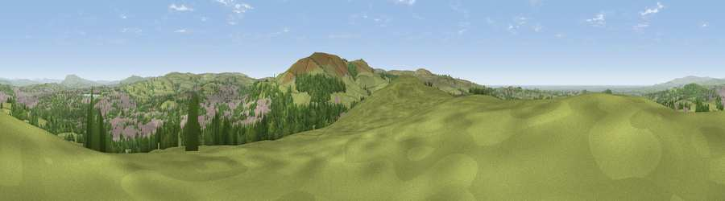

Viewpoint near Tockholes
#2774 in England · top 3% of its area beats it · near TockholesThe view, rendered

A 360° render of this exact spot computed from the terrain model, tree cover and land cover — summer colours, afternoon light, calibrated against photographs of famous viewpoints. Real trees, hedges and buildings will differ in detail.
The panorama
Grey silhouette: terrain skyline in each direction (720 bearings, Earth curvature and refraction included). Dashed green: skyline with trees (+15 m) and buildings (+8 m) as obstacles. Blue strip: how far the ground is visible on each bearing.
Where the view opens
Wedge length = distance to the farthest visible ground on that bearing (vegetation-aware). Rings at 10, 25 and 50 km.
What fills the view
60% grassland · 23% woodland · 16% built-up ·
Angular shares of the visible panorama (visual magnitude), not map area. Landscape diversity 0.43 (0–1 Shannon).
Key numbers
More beautiful places nearby
The staircase of upgrades: each row has a higher view potential than everything closer. Driving times are estimates from straight-line distance, calibrated against real road routing — check an actual route before setting out.
| Place | Direction | Drive | Score |
|---|---|---|---|
| Darwen Hill | SSE · 2 km | ~5 min | 80.7 |
| Rivington Pike | SSW · 10 km | ~19 min | 81.9 |
| White Brow | S · 11 km | ~21 min | 82.9 |
| Warton Crag | NNW · 52 km | ~74 min | 83.2 |
| Viewpoint near Grange-over-Sands | NNW · 61 km | ~84 min | 83.4 |
| Viewpoint near Cartmel | NNW · 64 km | ~87 min | 87.0 |
| Viewpoint near Cartmel | NNW · 64 km | ~87 min | 87.2 |
| Viewpoint near Finsthwaite | NNW · 71 km | ~94 min | 90.3 |
53.70598, -2.50025 · source: screening · position refined by local search. Computed location — check access rights before visiting.